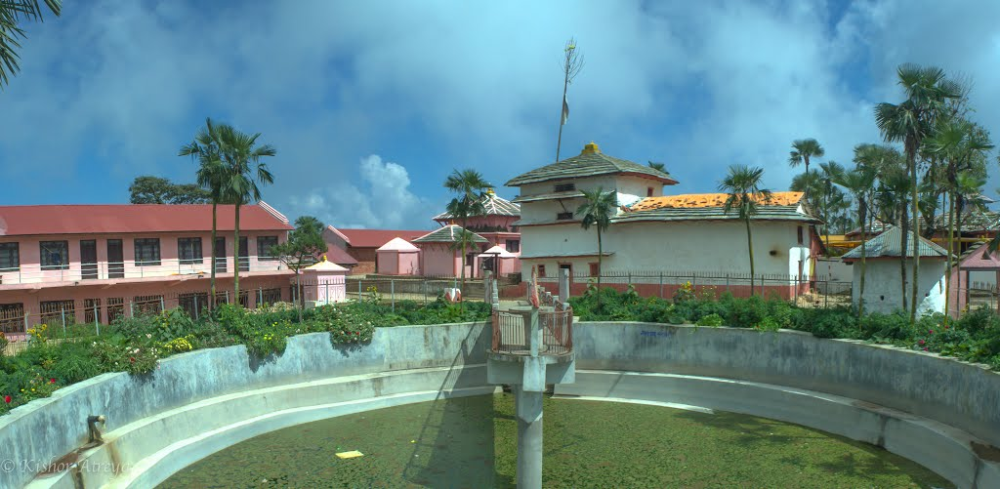

Sworgadwari is a hilltop temple complex and pilgrimage site in Pyuthan District, Nepal commemorating the special role of cows in Hinduism. It is said to have been founded by Guru Maharaj Narayan Khatri (Swami Hamsananda) who spent most of his life in the vicinity herding and milking thousands of cows.

According to traditional stories, some of his devotees followed him to see where he took the cows, but they never could find him. According to older people of the locality, he came from Rolpa to the present temple site and asked the owner of that land (landlord) to donate the land to him. He dug the land and obtained curd mixed rice and fire. He had explained that these things were those buried by pandavas in Dwapar yuga, when they worshipped in this place before departing to heaven. The landlord was astonished . He agreed to handover the land instantly. Thereafter the holy fire is burning continuously till then. Bivut (ash) of the firewoods burnt by the holy fire is believed to cure different physical disorders like headache, stomach ache etc. Before he left physical body the Guru gave some of his powers to a few disciples. On the day he departed his physical body by his own wish, a number of people gathered around him at the place where he habitually meditated. The Guru left his body after bidding goodbye to his disciples and other followers. His favourite cow also died at the same instant, then the rest of the cows miraculously disappeared within a few days. There are also accounts of cows emptying their milk by themselves every day at the same time, at the place where the Guru died. He had done many miracles during his lifetime. Once he asked Rolpali cowherds not to take the cattles in a particular area for grazing warning them of a huge landslide in that area. But they refused and were swept by the landslide. He used to tell fortune of the devotees. He was so much kind that no one returned from the temple without having food. He helped the poors to build their house. He managed to teach vedic scriptures and other religious scriptures to the children's. They may perform vedic worshipping in the temple after study. But, doing this is not a compulsion after study. Swargadwari is counted among Nepal's top pilgrimage sites and is listed in a national inventory of cultural and historic heritage sites.[3] As of 2009, a cable car to the temple complex was under construction.In the aftermath of the 1996-2006 Nepalese Civil War, donations of straw and hay had diminished to a point where resident cattle at Swargawari were in danger of starving. It is the one of the popular Hindu's religious place. It is located in southern part of pyuthan district. Main visitor of this religious area are Nepalese and Indians. sworgadwari is also popular for the trekking. it takes two days to reach there by foot. The footfall in swargadwari increase dramatically on June–July. Anyone can reach there from two routes; from bhingri, and from Ghorahi. It takes around 4 hours from bhingri to reach swargadwari, and around 8 hour from Ghorahi, dang. but the routes are extremely breath taking. The route from dang is more dangerous in comparison to the bhingri road. This road has been recently rerouted for betterment and safe journey. It lies on the top of the hill, surrounded by pine forest. There are vast number of Rhododendron trees on the way and in swargadwari itself.